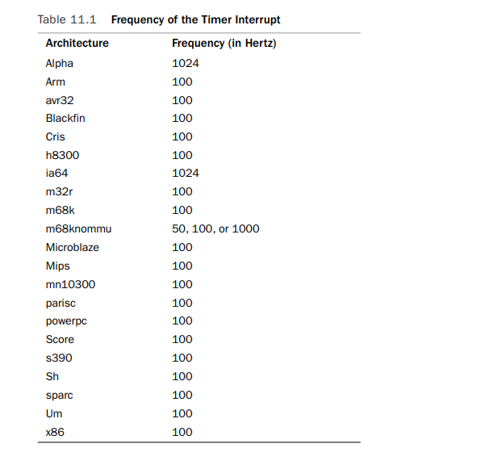
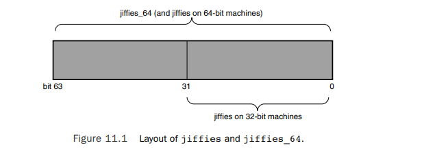

system timer
system timer,系统计时器，是个硬件设备，可以以固定频率产生timer interrupt。这个频率是可以preprogrammed,又叫tick rate. 因为内核是知道这个preprogrammed的频率是多少，所以内核也就知道两次连续的timer interrupt之间的时间间隔。这个间隔又叫做a tick,并且等于1/(tick rate)seconds.内核以此来更新wall time和system uptime. Wall time是the actual time of day.system uptime是relative time since the system booted timer interrupt handler处理的工作包括
- Updating the system uptime
- Updating the time of day
- updating resource usage and processor time statistics
- 更新当前工作进程的vruntime,检查是否要调度新的进程运行
- runing any dynamic timers that have expired( in bottom halves)
这些工作中有些是每次tick后都要执行的，work is carried out with the frequency of the tick rate.有些工作是execute periodically but only every n timer interrupts.
The Tick Rate: HZ
The frequency of the system timer is programmed on system boot based on a static pre-architecture define, HZ.
不同architecture下，HZ是不相同的。
内核将HZ定义在 
system timer interrupt frequency is important, the kernel's entire notion of time derives from the periodicity of the system timer.
The Ideal HZ Value
最早版本的linux,运行在i386架构上，timer interrupt frequency 是100HZ,在2.5版本的开发过程中，曾将频率增大到1000HZ,后来又改回了100HZ。现在HZ是可配置的，allowing users to compile a kernel with a custom HZ value. 增大tick rate 的好处
- timer interrupt has a higher resolution, thus all timed events have a higher resolution
- the accuracy of timed events improves. 对于100HZ的system timer而言，1000HZ的system timer 10 times finer。因此如果system timer是1000HZ,内核可以创建dynamic timers with 1ms resolution.而如果system timers是100HZ,内核创建的dyanmic timers的精度最高也就是10ms 同时，tick rate越高，timed events 执行的准确度也越高。kernel starts dynamic timers at random times，但是timed events只会在某个tick中断发生时被执行，因此这个计时的时间平均会偏离 half the period of the timer interrupt.如果HZ=100,则会平均偏离5毫秒，而如果HZ=1000,则平均偏离只会有0.5ms
This higher resolution and greater accuracy provides multiple advantages:
- Kernel dynamic timers execute with finer resolution and increased accuracy. (This provides a large number of improvements, one of which is the following.)
- System calls such as poll()and select()that optionally employ a timeout value execute with improved precision.
- Measurements, such as resource usage or the system uptime, are recorded with a finer resolution.
- Process preemption occurs more accurately.
Disadvantages with a larger HZ A higher tick rate implies more frequent timer interrupts, which implies higher overhead, because the processor must spend more time executing the timer interrupt handler.
Jiffies
The global variable jiffies holds the number of ticks that have occurred since the system booted. On boot, the kernel initializes the variable to zero, and it is incremented by one during each timer interrupt. The system uptime is therefore jiffies/HZ seconds. jiffies 定义在linux/jiffies.h文件中
extern unsigned long volatile jiffies;
example usage
unsigned long time_stamp = jiffies; /* now */
unsigned long next_tick = jiffies + 1; /* one tick from now */
unsigned long later = jiffies + 5*HZ; /* five seconds from now */
unsigned long fraction = jiffies + HZ / 10; /* a tenth of a second from now */
Internal Representation of Jiffies
jiffies定义为unsigned long,在32位机上是32bit,在64位机上是64bit.一个32bit的jiffies，如果HZ=100,则会在497天后overflow.如果HZ=1000,则会在49.7天后overflow.如果jiffies在所有architecture上都可以使用64位存储，那么with any reasonable HZ value,the jiffies variable would never overflow in anyone's lifetime
linux/jiffies.h定义了另一个variable jiffies_64
extern u64 jiffies_64;
The ld(1) script used to link the main kernel image (arch/x86/kernel/vmlinux. lds.S on x86) then overlays the jiffies variable over the start of the jiffies_64 variable:
jiffies = jiffies_64;
Thus, jiffies is the lower 32 bits of the full 64-bit jiffies_64 variable. Code can continue to access the jiffies variable exactly as before. Because most code uses jiffies simply to measure elapses in time, most code cares about only the lower 32 bits. The time management code uses the entire 64 bits, however, and thus prevents overflow of the full 64-bit value. Figure 11.1 shows the layout of jiffies and jiffies_64.

Code that accesses jiffies simply reads the lower 32 bits of jiffies_64.The function get_jiffies_64() can be used to read the full 64-bit value. Such a need is rare; consequently, most code simply continues to read the lower 32 bits directly via the jiffies variable. On 64-bit architectures, jiffies_64 and jiffies refer to the same thing. Code can either read jiffies or call get_jiffies_64() as both actions have the same effect.Hardware Clocks and Timers
通常大多数architecture会提供2个硬件设备用于time keeping. the system timer and the real-time clock.
- Real-Time Clock real time clock会存储wall time,并且是非易失的。即使system off 了，RTC依然会运行，keep track of time by a small battery typically included on the system board. On boot, the kernel reads the RTC and uses it to initialize the wall time, which is stored in the xtime variable.The kernel does not typically read the value again; however,some supported architectures, such as x86, periodically save the current wall time back to the RTC. Nonetheless, the real time clock’s primary importance is only during boot, when the xtime variable is initialized.
- System Timer On x86, the primary system timer is the programmable interrupt timer (PIT).The PIT exists on all PC machines and has been driving interrupts since the days of DOS.The kernel programs the PIT on boot to drive the system timer interrupt (interrupt zero) at HZ frequency. It is a simple device with limited functionality, but it gets the job done.
除此之外还有别的time source,比如local APIC timer, processor's time stamp counter(tsc)
The Timer Interrupt Handler
The timer interrupt is broken into two pieces: an architecture-dependent and an architecture-independent routine.
architecture-dependent：
- Acknowledge or reset the system timer as required.
- Periodically save the updated wall time to the real time clock
- Call the architecture-independent timer routine, tick_periodic().
tick_periodic()：
- increment the jiffies_64 count by one.
- Update the wall time, which is stored in xtime.
- Calculate the infamous load average.
- Update resource usages, such as consumed system time and user time, for the currently running process.
- raise TIMER_SOFTIRQ softirq
- Execute scheduler_tick(),balance the run queue
static void tick_periodic(int cpu)
{
if (tick_do_timer_cpu == cpu) {
write_seqlock(&xtime_lock);
/* Keep track of the next tick event */
tick_next_period = ktime_add(tick_next_period, tick_period);
do_timer(1);
write_sequnlock(&xtime_lock);
}
update_process_times(user_mode(get_irq_regs()));
profile_tick(CPU_PROFILING);
}
void do_timer(unsigned long ticks)
{
jiffies_64 += ticks;
update_times(ticks);
}
static inline void update_times(unsigned long ticks)
{
update_wall_time();
calc_load(ticks);//update the system's load average statistics
}
//user_tick equal 1 ,如果中断发生时，当前cpu处于用户态，也就是在user space中运行。
//user_tick equal 0, 如果中断发生时，当前cpu处于内核态，比如运行在系统调用中
void update_process_times(int user_tick)
{
struct task_struct *p = current;
int cpu = smp_processor_id();
/* Note: this timer irq context must be accounted for as well. */
if (user_tick)
account_user_time(p, jiffies_to_cputime(1));
else
account_system_time(p, HARDIRQ_OFFSET, jiffies_to_cputime(1));
run_local_timers(); //marks softirq TIMER_SOFTIRQ to handle the execution of any expired dynamic timers.
if (rcu_pending(cpu))
rcu_check_callbacks(cpu, user_tick);
scheduler_tick(); //decrement the currently running process's timeslice and sets need_resched if needed
run_posix_cpu_timers(p);
}
The Time of Day
xtime全局变量存储wall time，定义在 kernel/time/timekeeping.c文件中
struct timespec xtime;
struct timespec结构体定义在 linux/time.h文件中
struct timespec{
__kernel_time_t tv_sec; //seconds
long tv_nsec; //nanoseconds
}
The xtime.tv_sec value stores the number of seconds that have elapsed since January 1, 1970 (UTC).This date is called the epoch. Most Unix systems base their notion of the current wall time as relative to this epoch.The xtime.tv_nsec value stores the number of nanoseconds that have elapsed in the last second. Reading or writing the xtime variable requires the xtime_lock lock, which is not a normal spinlock but a seqlock. To update xtime, a write seqlock is required:
write_seqlock(&xtime_lock);
/* update xtime ... */
write_sequnlock(&xtime_lock);
Reading xtime requires the use of the read_seqbegin() and read_seqretry() functions:
unsigned long seq;
do {
unsigned long lost;
seq = read_seqbegin(&xtime_lock);
usec = timer->get_offset();
lost = jiffies - wall_jiffies;
if (lost)
usec += lost * (1000000 / HZ);
sec = xtime.tv_sec;
usec += (xtime.tv_nsec / 1000);
}while (read_seqretry(&xtime_lock, seq));
内核也提供了一些用于获取和设置wall time的系统调用，比如sys_gettimeofday,sys_settimeofday等
Dyanmic Timers
使用定时器可delaying work a specified amount of time——certainly no less, and with hope, not much longer. A dynamic timer is easy to use.You perform some initial setup, specify an expiration time, specify a function to execute upon said expiration, and activate the dynamic timer.The given function runs after the dyanmic timer expires.Dynamic timers are not cyclic.The dynamic timer is destroyed after it expires.
Dyanmic timers are represented by struct timer_list, which is defined in
struct timer_list {
struct list_head entry; /* entry in linked list of timers */
unsigned long expires; /* expiration value, in jiffies */
void (*function)(unsigned long); /* the timer handler function */
unsigned long data; /* lone argument to the handler */
struct tvec_base *base; /* internal timer field, do not touch */
};
create a dynamic timer
struct timer_list my_timer;
initialize it
init_timer(&my_timer);
fill out the remaining values as required:
my_timer.expires = jiffies + delay; /* timer expires in delay ticks */
my_timer.data = 0; /* zero is passed to the timer handler */
my_timer.function = my_function;/* function to run when timer expires */
activate the dynamic timer
add_timer(&my_timer)
modify the expiration of an already active dynamic timer
mod_timer(&my_timer, jiffies + new_delay); /* new expiration */
The mod_timer() function can operate on timers that are initialized but not active, too. If the timer is inactive, mod_timer() activates it.The function returns zero if the timer were inactive and one if the timer were active. In either case, upon return from mod_timer(), the timer is activated and set to the new expiration.
deactivate a dynamic timer prior to its expiration
del_timer(&my_timer);
The function works on both active and inactive timers. If the timer is already inactive, the function returns zero; otherwise, the function returns one. Note that you do not need to call this for timers that have expired because they are automatically deactivated.
To deactivate the dyanmic timer and wait until a potentially executing handler for the timer exits, use del_timer_sync():
del_timer_sync(&my_timer);
Unlike del_timer(), del_timer_sync() cannot be used from interrupt context.
The kernel executes dyanmic timers in bottom-half context, as softirqs, after the system timer interrupt completes.The system timer interrupt handler runs update_process_times(), which calls run_local_timers():
/*
* Called by the local, per-CPU timer interrupt on SMP.
*/
void run_local_timers(void)
{
hrtimer_run_queues();
raise_softirq(TIMER_SOFTIRQ);
softlockup_tick();
}
Timers are stored in a linked list. However, it would be unwieldy for the kernel to either constantly traverse the entire list looking for expired timers, or keep the list sorted by expiration value; the insertion and deletion of timers would then become expensive. Instead, the kernel partitions timers into five groups based on their expiration value.Timers move down through the groups as their expiration time draws closer.The partitioning ensures that, in most executions of the timer softirq, the kernel has to do little work to find the expired timers. Consequently, the timer management code is efficient.
Delaying Execution
Often, kernel code (especially drivers) needs a way to delay execution for some time without using timers or a bottom-half mechanism.
This is usually to enable hardware time to complete a given task.The time is typically quite short
For example, the specifications for a network card might list the time to change Ethernet modes as two microseconds. After setting the desired speed, the driver should wait at least the two microseconds before continuing.
- busying looping
busy looping at least 10 ticks
unsigned long timeout = jiffies + 10; /* ten ticks */
while (time_before(jiffies, timeout)) ;
busy looping at least 2 seconds
unsigned long delay = jiffies + 2*HZ; /* two seconds */
while (time_before(jiffies, delay)) ;
This approach is not nice to the rest of the system.While your code waits, the processor is tied up spinning in a silly loop—no useful work is accomplished!
- conditional reschedule
reschedule your process to allow the processor to accomplish other work while your code waits:
unsigned long delay = jiffies + 5*HZ;
while (time_before(jiffies, delay)) cond_resched();
The call to cond_resched()schedules a new process, but only if need_resched is set. In other words, this solution conditionally invokes the scheduler only if there is some more important task to run. Note that because this approach invokes the scheduler, you cannot make use of it from an interrupt handler—only from process context.All these approaches are best used from process context, because interrupt handlers should execute as quickly as possible. (And busy looping does not help accomplish that goal!) Furthermore, delaying execution in any manner, if at all possible, should not occur while a lock is held or interrupts are disabled.
- small dealy
Sometimes, kernel code (again, usually drivers) requires short (smaller than a clock tick) and rather precise delays.This is often to synchronize with hardware, which again usually lists some minimum time for an activity to complete—often less than a millisecond. It would be impossible to use jiffies-based delays, as in the previous examples, for such a short wait.With a timer interrupt of 100Hz, the clock tick is a rather large 10 milliseconds! Even with a 1,000Hz timer interrupt,the clock tick is still one millisecond.Another solution is clearly necessary for smaller, more precise delays.
Thankfully, the kernel provides three functions for microsecond, nanosecond, and millisecond delays, defined in
void udelay(unsigned long usecs);// microseconds
void ndelay(unsigned long nsecs) //nanoseconds
void mdelay(unsigned long msecs)//milliseconds
The udelay() function is implemented as a loop that knows how many iterations can be executed in a given period of time.The mdelay() function is then implemented in terms of udelay(). Because the kernel knows how many loops the processor can complete in a second , the udelay() function simply scales that value to the correct number of loop iterations for the given delay. Everyone is familiar with a boot message similar to the following (this is on a 2.4GHz 7300-series Intel Xeon):
Detected 2400.131 MHz processor.
Calibrating delay loop... 4799.56 BogoMIPS
BogoMIPS: bogus (that is, fake) and MIPS (million of instructions per second) The BogoMIPS value is the number of busy loop iterations the processor can perform in a second.In effect, BogoMIPS are a measurement of how fast a processor can do nothing! This value is stored in the loops_per_jiffy variable and is readable from /proc/cpuinfo. The delay loop functions use the loops_per_jiffy value to figure out (fairly precisely) how many busy loop iterations they need to execute to provide the requisite delay. The kernel computes loops_per_jiffy on boot via calibrate_delay() in init/main.c.
Remember that it is rude to busy loop with locks held or interrupts disabled because system response and performance will be adversely affected. If you require precise delays, however, these calls are your best bet.Typical uses of these busy waiting functions delay for a small amount of time, usually in the microsecond range.
schedule_timeout()
/* set task’s state to interruptible sleep */ set_current_state(TASK_INTERRUPTIBLE); /* take a nap and wake up in “s” seconds */ schedule_timeout(s * HZ);This call puts your task to sleep until at least the specified time has elapsed.There is no guarantee that the sleep duration will be exactly the specified time—only that the duration is at least as long as specified.When the specified time has elapsed, the kernel wakes the task up and places it back on the runqueue. The lone parameter is the desired relative timeout, in jiffies.This example puts the task in interruptible sleep for s seconds. Because the task is marked TASK_INTERRUPTIBLE, it wakes up prematurely if it receives a signal. If the code does not want to process signals, you can use TASK_UNINTERRUPTIBLE instead.The task must be in one of these two states before schedule_timeout() is called or else the task will not go to sleep. ```c /**
- schedule_timeout - sleep until timeout
- @timeout: timeout value in jiffies *
- Make the current task sleep until @timeout jiffies have
- elapsed. The routine will return immediately unless
- the current task state has been set (see set_current_state()). *
- You can set the task state as follows - *
- %TASK_UNINTERRUPTIBLE - at least @timeout jiffies are guaranteed to
- pass before the routine returns. The routine will return 0 *
- %TASK_INTERRUPTIBLE - the routine may return early if a signal is
- delivered to the current task. In this case the remaining time
- in jiffies will be returned, or 0 if the timer expired in time *
- The current task state is guaranteed to be TASK_RUNNING when this
- routine returns. *
- Specifying a @timeout value of %MAX_SCHEDULE_TIMEOUT will schedule
- the CPU away without a bound on the timeout. In this case the return
- value will be %MAX_SCHEDULE_TIMEOUT. *
In all cases the return value is guaranteed to be non-negative. */ signed long __sched schedule_timeout(signed long timeout) { struct timer_list timer; unsigned long expire;
switch (timeout) { case MAX_SCHEDULE_TIMEOUT:
schedule(); goto out;default:
if (timeout < 0) { printk(KERN_ERR "schedule_timeout: wrong timeout " "value %lx\n", timeout); dump_stack(); current->state = TASK_RUNNING; goto out; }}
expire = timeout + jiffies;
setup_timer_on_stack(&timer, process_timeout, (unsigned long)current); __mod_timer(&timer, expire, false, TIMER_NOT_PINNED); schedule(); del_singleshot_timer_sync(&timer);
/ Remove the timer from the object tracker / destroy_timer_on_stack(&timer);
timeout = expire - jiffies;
out: return timeout < 0 ? 0 : timeout; }
static void process_timeout(unsigned long data) { /This function puts the task in the TASK_RUNNING state and places it back on the runqueue./ wake_up_process((struct task_struct *)data); } ``` Sometimes it is desirable to wait for a specific event or wait for a specified time to elapse—whichever comes first. In those cases, code might simply call schedule_timeout() instead of schedule() after placing itself on a wait queue.The task wakes up when the desired event occurs or the specified time elapses.The code needs to check why it woke up，it might be because of the event occurring, the time elapsing, or a received signal—and continue as appropriate.